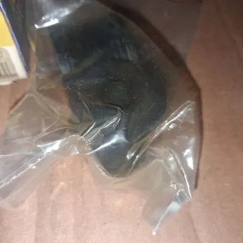
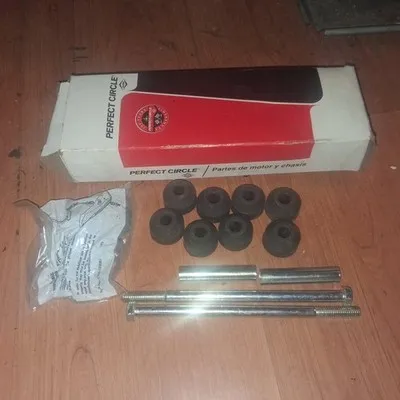

Pitman & Idler Arms
Idler Arm New in Box 1999-2007 Chevy Silverado GMC Sierra Tahoe
Fits 1999 Chevrolet Silverado · 2007 GMC Sierra (1563 listed)
$29.99
View details7 parts in Suspension & Steering from Perfect Circle, Mevotech and Moog and more, each with photos, part numbers and condition on its own page. Open a part to see every vehicle it is listed for.
7 parts
Online checkout through Square. Ships from Carbondale, PA, or pick up by confirmed appointment only. Fitment question? Message us.
Fits 1999 Chevrolet Silverado · 2007 GMC Sierra (1563 listed)
$29.99
View details
GK5252
Fits 1975-1998 Buick Skylark · 1973-1977 Buick Century (1054 listed)
$8.99
View details
K90628
Fits 1998-1999 Mazda 626 (8 listed)
$19.99
View details
260-5045
Fits 1993-1994 Ford Tempo · 1985-1994 Mercury Topaz (93 listed)
$24.99
View details
265-1219
Fits 1957-1958 Buick Century · 1959-1960 Buick Electra (1555 listed)
$14.99
View details
269-2465
Fits 1992-2002 Ford Crown Victoria · 1979-1986 Ford LTD (604 listed)
$14.99
View details
Fits 1995-2007 Ford Taurus · 1995-2005 Mercury Sable (234 listed)
$29.99
View details